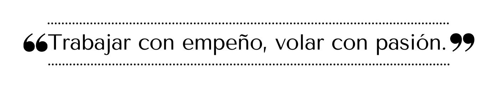

espacioespacio
BIENVENIDOS
El Aeropuerto Interternacional Angeles se encuentra ubicado en los municipios de cd juarez en mexicoEl Aeropuerto Internacional de Cd Juarez (AIQ) entró en operaciones, bajo una asociación entre el gobierno estatal de Querétaro y Aeropuertos y Servicios Auxiliares (ASA), el 28 de noviembre de 2004, sustituyendo las que se realizaban en el Aeropuerto “Ing. Fernando Espinosa Gutiérrez” en la Capital del Estado de Querétaro, atrayendo las operaciones comerciales, privadas y de carga, así como parte del equipo y recursos humanos que ahí realizaba sus funciones.Los preparativos comenzaron en 1999, realizando una serie de estudios, el 12 julio de 2002 se pone en marcha el proceso de construcción de esta magnífica obra de infraestructura. El Aeropuerto Fernando Espinosa, inició sus actividades en 1955 como un aeródromo civil, en 1986 el Gobierno del Estado decide ampliarlo y otorgar la concesión para su explotación al organismo paraestatal: “Aeropuertos y Servicios Auxiliares” (ASA). En 1992 comienzan los vuelos comerciales de itinerario fijo con la línea Aerolitoral, y para 1993, se incorpora Aeromar con vuelos regulares y por último, en 1997 se declaró Aeropuerto Internacional, llegando en el 2003 a 110,000 pasajeros y 11,000 operaciones.En la actualidad El AIQ es uno de los 25 aeropuertos mexicanos que cuentan con certificación de seguridad por parte de la Dirección de Aeronáutica Civil (DGAC). Fue el primer aeropuerto en obtenerla en 2009 y la ha renovado dos veces 2013 y 2016. Tiene duración de tres años. 42Contamos con autorizaciones para recibir aviones Boeing 747 y Airbus 380.
espacio
MISIÓN
Somos un aeropuerto con un equipo comprometido en brindar servicios de calidad y excelencia a nuestros usuarios, en un ambiente seguro, para contribuir al desarrollo económico y turístico de Cd Juarez y resto del país.
espacio
VISIÓN
Consolidarnos como la mejor opción en México para el transporte aéreo de pasajeros y carga, proporcionando servicios aeroportuarios, complementarios y comerciales de excelencia, ofreciendo rutas estratégicas, infraestructura confortable y de vanguardia con conectividad multimodal, en un ámbito de mejora continua y rentabilidad.